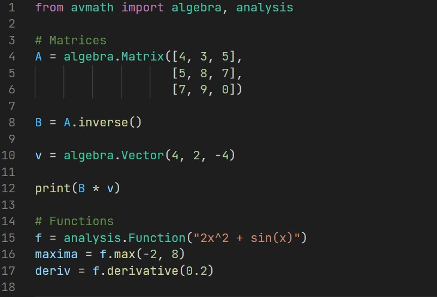

Avmath is a Python library for mathematics. Its main focus is on the symbolic
calculations for which it provides a wide span of objects and operations. Its
interface allows a calculator-like workflow because the algorithms concentrate
on mathematical logic instead of programming paradigms.